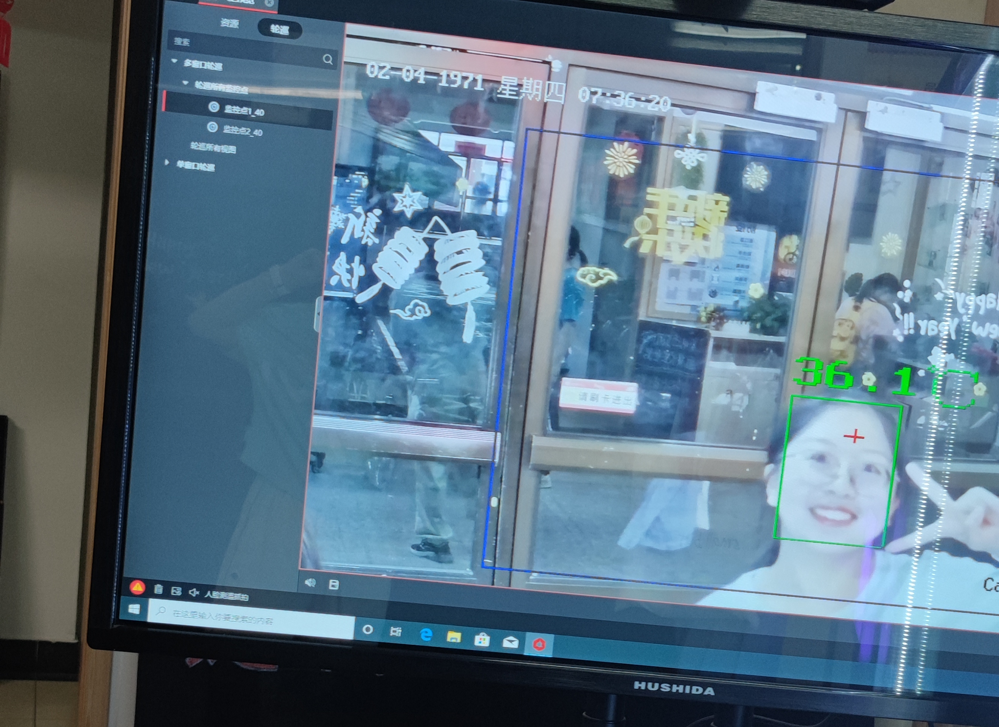

读书累了就运动 no pain no gain 百年前的北大先哲们，他们四处奔走，高声呐喊，为民族未来而奋斗，为国家为往而忧心；今日之我们，生在了一个和平的国家，又遇上一个不和平的的年代，理当继承先辈遗风，锻炼自己的体魄，为国献智献力，为祖国健康工作六十年！！ 2021北大开学第一跑 用奔跑的姿态迎接大学新生活，火热气氛点燃燕园秋夜，也点燃我的跑步激情  夜奔很快乐 在音乐与灯光下，夜奔的气氛好得惊人，不知不觉就跑了很多圈，充实又嗨皮